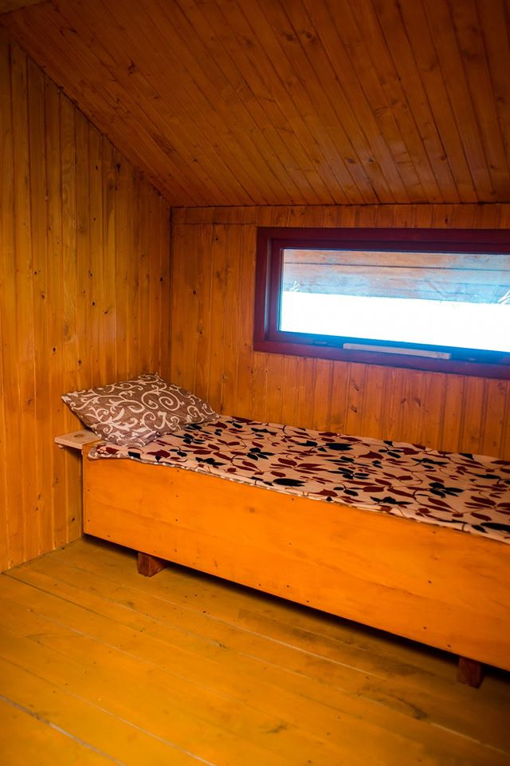
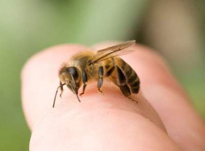

Сон на вулику с бджолами — чудова комплексна терапія на цілий організм людини, що базуеться на іі близькому контактіз бджолиною сім`ею. Це величезне біологічне магнітне поле, під діею якого відбуваеться вирівнювання порушень електромагнітного поля людини, внаслідок яких виникають різні захворювання. На організм людини великий позитивний вплив мае не лише «живе« тепло бджолиноі сім`і, але й мікровібраціі, які створюються змахами крилець бджіл, що діють як вібромасаж, що, у свою чергу, позитивно діе на нервову, кровоносну, м`язеву систему, створюючи умови для самокорегування функцій внутрішніх органів. Вуликотерапія покращує діяльність серцево-судинноі системи (відбуваеться стабілізація артеріального тиску, покращення мозкового та периферичного кровообігу, збільшення серцевого викиду), нервовоі та ендокринноі системи (гармонізація балансу симпатичноі та парасимпатичноі нервовоі системи, оптимізація обмінних процесів), дихальноі системи (за рахунок інгаляцій вуликового повітря, насиченого фітонцидами, прополісом, воском). Крім того, покращуеться психоемоційний статус людини, що відображаеться у знятті фізичноі й емоційноі втоми, підвищенні працездатності, посиленні очищення й регенераціі тканин, підвищенні імунітету та реактивності й адаптогенності організму.

Основні показання: знижений імунітет, порушення кровообігу, захворювання ендокринної та нервової систем, підвищений або знижений артеріальний тиск, серцево- судинні і захворювання опорно -рухового апарату , стрес і депресія. Апітерапія, це ніщо інше, як лікувальний вібромассаж. А вплив мікровібрацій є життєвою необхідністю, додають лікарі. І хоча сон на вуликах не панацея від усіх хвороб, однак відповідний вплив на організм людини сон на вуликах таки має. Тим більше, під час апітерапії використовуються лише сильні і здорові бджолині сім`ї . Спати на вуликах можна починати з березня і до кінця вересня, говорять пасічники Львова. Лікування бджолами корисне для людей любого віку, Під час такої процедури, відновлення організму відбувається практично за 2-4 годин. Мікрохвилі слабо відчутні. Ефект м`який. Користь Лікування бджлами відновлює кровообіг і стабілізувати тиск ; сон ж у приміщенні , де активно працюють бджоли відновлює сили і імунітет. Через дрібну сіточку з бджолиного житла виходить чисте і цілюще повітря. Він відмінно підходить для інгаляції. За десять хвилин його вдихання в бронхах і легенях людини гине більшість мікробів. Біля самого вулика повітря високоіонізоване, завдяки чому, потрапляючи в організм людини, він знижує рівень вільних радикалів. А ще від бджолиної сім`ї виходить сильне біомагнітне поле, яке нормалізує всі функції організму і покращує імунітет. За якихось годину-дві на вуликах можна повністю відновити свої сили. Та й монотонне бджолине дзижчання чудово заспокоює психіку. Основними показаннями до вуликотерапії служать наступні захворювання і хворобливі стани: знижений імунітет, порушення кровообігу, захворювання ендокринної та нервової систем, підвищений або знижений артеріальний тиск, серцево- судинні і захворювання опорно -рухового апарату , стрес і депресія. Сенс полягає в тому що від бджолиного рою у вулику виділяється природне тепло (приблизно 35 ° C), а гудіння бджіл і невелика вібрація вулика позитивно позначаються в цілому на організмі. Сон на вуликах добре діє на суглоби і кровоносні судини, вони самі прочищаються, сон на вуликах підвищує чоловічу потенцію.
Бджолина отрута — це сильно-діюча речовина, яка вимагає уважності при призначенні. Бджолина отрута призначається людині виходячи з чутливості до дії отрути, тяжкості і виду захворювання. Бджолина отрута є безбарвна густа рідина із запахом меду. Введення бджолиної отрути в організм людини може здійснюватися за допомогою укусу, втирання, електрофорезу, інгаляції і вживання всередину. Найефективнішим і часто використовуваним способом є спосіб бджоловжалення. Дія бджолиної отрути на організм людини залежить від кількості укусу і від індивідуальної реакції організму на бджолину отруту. У терапевтичних дозах бджолина отрута є хорошим лікувальним засобом при багатьох захворюваннях, він має протизапальну і знеболюючу дію. Дуже часто бджолина отрута використовують для зменшення болю і запалення в суглобах і м’язах, при ревматизмі, невралгіях, гіпертонічної хвороби т. д. За допомогою бджолиної отрути можна зняти навіть гострі болі в суглобах і відновити їх рухливість.

Метод бджоловжалення Перед тим як почати процедуру бджоловжалення обов’язково необхідно перевірити чутливість людини до бджолиної отрути. Для цього найчастіше проводиться біологічна проба. У поперекової області шкіру ретельно очищають і до цього місця прикладають бджолу для укусу. Жало витягають дуже швидко, для того щоб в організм потрапила мінімальна доза бджолиної отрути. На наступний день проводиться аналіз сечі, який досліджується на вміст білка і цукру. Потім роблять другу біологічну пробу, під час якої жало бджоли витягується приблизно через хвилину. На наступний день знову проводять аналіз сечі. Якщо ніяких змін з боку організму не спостерігаються, то можна починати лікування.Для проведення процедури бджолу беруть спеціальним пінцетом за спинку і прикладають черевцем до необхідного місця. Обраний ділянку шкіри перед процедурою повинен бути ретельно очищений. Після укусу жало витягується через 5 — 10 хвилин. Після проведення процедури хворому рекомендується полежати 20 — 30 хвилин. Під час курсу лікування 1 раз на тиждень хворий повинен здавати аналізи крові і сечі для контролю за своїм станом. Найчастіше лікування проходить за наступною схемою: у перший день проводиться укусу тільки однієї бджолою, у другий день проводиться укусу двома бджолами і в кожний день для ужаления додається по одній бджолі. Такий курс лікування звичайно становить 10 днів, після якого необхідно зробити перерву в 3 — 4 дні. Потім курс можна повторити, а бджіл брати в три рази більше. Усього за два курсу можна використовувати до 200 бджіл. Якщо після проведення курсів одужання не настає, то бджоловжалення більше не проводять. Вибір місця для укусу залежить від характеру захворювання. Найчастіше укусу проводять в зовнішні поверхні плечей і стегон, місця змінюються щодня так, щоб повторні ужаления в одне і теж місце проводилося через 4 — 5 днів. Бджолину отрута не рекомендують використовувати при гострих інфекційних захворюваннях, цукровому діабеті, злоякісних новоутвореннях, туберкульозі, гепатиті, вагітності і т. д. Бджолина Перга Продукти бджільництва унікальні за своєю біологічною цінністю. Вони найбагатші щодо біологічно активних сполук з усіх відомих натуральних продуктів. Одним з таких найцінніших продуктів є перга — це продукт переробки бджолами пилку. Останній, в свою чергу, збирається бджолами з квіток рослин, заноситься у вулик і складається в комірки. Далі під дією складних біохімічних процесів та безпосередньою участю бджіл пилок законсервовується і утворюється перга, яка за своїми лікувальними властивостями та біохімічним складом значно переважає пилок.Бджолиний хліб, так ще називають пергу, відіграє велику роль у житті бджіл. Вона необхідна для розвитку нормальних фізіологічних процесів, є незамінним джерелом амінокислот та вітамінів. Адже перга містить всі незамінні амінокислоти, які необхідні і для організму людини, ліпіди, багато вітамінів: А, Е, С, групи В. Перга багата на мінеральні речовини, такі як калій, кальцій, фосфор, магній, та інші. Вона містить унікальний комплекс білків, вуглеводів, жирів, мінеральних солей, ферментів, фітогормонів, природних антибіотиків. Усі вони збалансовані і органічно зв’язані між собою, що пояснює її високу цілющу дію. Пергу застосовують для лікування цілого спектру захворювань – анемії, серцевої недостатності. інфарктів, інсультів, гепатитів, виразок шлунку, гастритів, порушення потенції, чоловічого безпліддя, патології вагітних, гінекологічних захворювань. Бджолиний хліб відновлює кровообіг мозку при черепно-мозкових травмах та інсультах, розсмоктує доброякісні пухлини (міома, фіброма). Найчастіше пергу застосовують для підвищення імунітету організму як у дітей так і дорослих! Перга є профілактичним засобом по запобіганню інфекційних захворювань, позитивно впливає на серцево-судинну систему. За мікробіологічним складом бджолиний хліб немає аналогів – за короткий час відновлює травлення, лікує дизбактеріоз. Перга сприяє утворенню нових клітин в організмі, тобто проходить омоложення організму в цілому, швидше загоюються рани. Пергу вживати по 0,5-1 чайній ложечці 1-2 рази на день за 20 хв. перед їжею. Рекомендовано споживати зранку натщесерце та на ніч перед сном повільно розсмоктуючи не запиваючи. Жодна лабораторія неспроможна створити такі продукти, які людство отримує від невгамовних трудівниць-бджіл. Будь-які штучні суміші вітамінів чи мінеральих речовин ніколи не замінять те, що пропонує нам природа. Настойка прополіса на спирту Прополіс — смолиста речовина зеленувато-бурого або коричневого кольору з приємним запахом бруньок тополі, меду, воску і ванілі. Завдяки антибактеріальним, антибіотичним властивостям, ранозагоювальному ефекту, багатосторонній імунологічній та антисептичній дії прополіс широко використовується в практиці. Крім цього, він ефективно застосовується в якості допоміжного засобу при лікуванні ран, захворювань системи дихання, ротової порожнини, очей, в профілактиці і лікуванні захворювань простати, при захворюваннях серцево-судинної системи та легень. Він покращує зір, позитивно впливає на нервову систему, покращує пам\’ять і загальний фізичний стан, допомагає при опіках шкіри, екземі. Науково доказана ефективність вживання протягом місяця прополісу у людей старшого віку для покращення пам\’яті. Прополіс збуджує у клітинах синтез нуклеїнових кислот і тим самим протеїнів. Спиртовий розчин прополісу принімають до іди за 1 годину з серим яйцем або звареним леном а від всего іншого або для профілактики після іди (від 5 до 30 капель щоденно 2-3 рази на день, капати на воду або на молоко), особливо при ангінах. Спиртовий розчин прополісу вживається для лікування виразки шлунка і 12-палої кишки на настої льняного насіння протягом 3-5-тижневого курсу. Позитивний ефект спостерігається при геморої з періодичною кровотечею. Вживається в краплях і місцеве, в суміші з маслом какао. Спиртовим розчином прополісу можна змочити льняну ганчірку і накладати її на збільшені вузли, розширені вени гомілки.